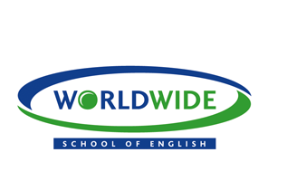

 【ニュージーランド/オークランド】
生徒を心から想う熱心で温かい先生とコミュニケーション主体な授業で「生きた英語」が学べます！
WWSE / ダブリューダブリューエスイーWorldwide School of English(ワールド・ワイド・スクール・オブ・イングリッシュ)

一人ひとりの生徒を心から想う熱心で温かい先生と
コミュニケーション主体な授業で「生きた英語」が学べます！
オークランドのダウンタウンにキャンパスがあり、どの地域にも簡単に行くことが出来ます。
また、港も近いので散歩をしながらリフレッシュするのにも最高ですよ。
先生と生徒の距離が近く、先生も積極的にアクティビティに参加するので、家族のような関係になる生徒もいます。
毎日放課後に開催されるアクティビティと、2ヶ月に1回に開催されるスクールパーティーで覚えた英語をすぐに使えます！
English Only Policyを厳しく実施しており、
現地の人材派遣会社と提携して英語を使うローカルのお仕事紹介もしています。
ケンブリッジ、IELTS、TOEIC対策コースだけでなく、
フライトアテンダント、ホスピタリティーなどのEnglish Plusプログラムもオススメです。
4つのキャンパスを自由に組み合わせてプランを作り、
勉強をしながらニュージランドの主要都市や観光都市を旅行してまわることができます。
＜現地スタッフからのコメント＞
こんにちは。 ワールドワイドスクールで日本人生徒さんの学校生活をサポートしている、カウンセラーMamikoです！ワールドワイドの最大の魅力は、コミュニケーションを大切にしている授業体制と、一人ひとりの生徒を心から想う、熱心で温かい先生達・そして何よりも、30ヵ国にも及ぶ世界中から集まった友達と”生きた英語”が学べる事です。また、学校生活のご相談は、いつでも私が相談に乗ります。私自身も留学生だった経験か ら、大切な留学の時間が皆さんにとって充実し、生涯を通じての財産になるよ う、少しでもお手伝いさせて頂ければ嬉しいです。
コミュニケーションを大切にするクラス体制
先生と生徒の距離が近く、先生も積極的にアクティビティに参加するので、家族のような関係になる生徒もいます。
学んだことをすぐ使える場所がある
毎日放課後に開催されるアクティビティと、2ヶ月に1回に開催されるスクールパーティーで覚えた英語をすぐに使えます！
できるだけ英語を使う環境作り
English Only Policyを厳しく実施しており、現地の人材派遣会社と提携して英語を使うローカルのお仕事紹介もしています。
英語＋αとスペシャルプログラム
ケンブリッジ、IELTS、TOEIC対策コースだけでなく、フライトアテンダント、ホスピタリティーなどのEnglish Plusプログラムもオススメです。
観光しながら英語を学ぶ！スーパーコンボプログラム
4つのキャンパスを自由に組み合わせてプランを作り、勉強をしながらニュージランドの主要都市や観光都市を旅行してまわることができます。